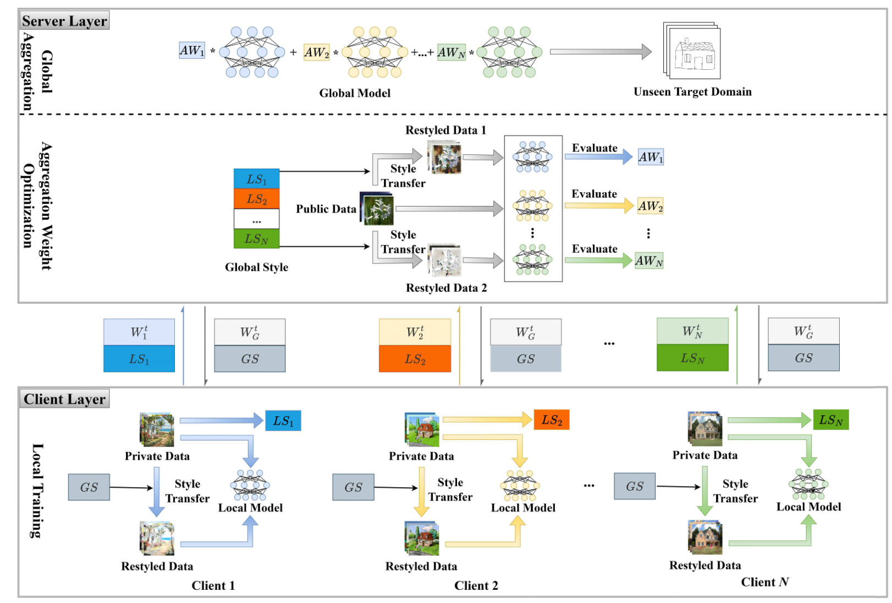

主页
研究所合影
CoLD 隶属于水利部水利大数据重点实验室，河海大学计算机与软件学院。CoLD 位于河海大学江宁校区勤学楼, 总部在4209室，现任负责人是毛莺池教授教授。
'CoLD' 的含义是 'Computing and Learning in Distributed Systems'。CoLD 的主要研究兴趣包括分布式计算、边缘计算、智能计算、机器学习以及相关的其他领域。目前的主要研究内容包括：云边端协同计算、演化计算、联邦学习、集成学习、多标记学习、半监督学习、智能体自进化、自动算法设计等。CoLD 的 成员包括专任教师、博士后、学生。如果您希望申请博士后，请与毛莺池教授联系；如果您希望在 CoLD 攻读博士或硕士学位，请在前一年的四月左右阅读 招生网页，并根据要求提供必要的申请材料，请注意，所有申请者都要经过提前面试（面试程序相同，最终结果取决于您与导师的双向选择）； 如果您希望在 CoLD 做本科毕业论文（限河海大学本校生），请通过 Email 与具体的 CoLD 全职教师成员联系。
研究进展
面对不同客户端图像风格的差异，研究将风格迁移、预测一致性与聚合权重优化结合起来，使联邦模型更好地适应未见过的数据域。
TIP · 陈思光
研究面向有严格截止时间的分布式任务，将节点选择与计算成本联合考虑，并通过组合优化和多臂老虎机方法应对节点性能差异与未知性。
TC · 唐斌、谢在鹏
展开全部进展（10 条）收起进展
研究将信息提取与可信度判断结合，通过不同粒度的图像特征区分信息承载和扰动检测，减少错误隐藏信息在分布式云服务中继续传播的风险。
TC · 毛莺池
针对多读写器覆盖的大规模 RFID 系统，研究通过布谷鸟过滤器和无冲突响应定位关键标签，减少非目标标签占用通信资源。
TMC · 王严严、屈志昊、吕沈欢、唐斌
研究联合考虑服务功能链放置与虚拟网络功能迁移，复用已有容器实例，并结合边缘服务器连通性选择迁移目标，以降低服务时延与运行成本。
TSC · 胡世红、屈志昊
针对差分隐私噪声可能损伤模型精度的问题，研究提出重要梯度保护与动态聚合方法，减少过量噪声的影响并改善训练收敛。
TC · 毛莺池
研究将梯度量化与裁剪随机梯度下降结合，用自适应步长减轻量化误差的影响，并分析非独立同分布数据下的收敛行为。
TC · 屈志昊、胡世红
研究把服务请求调度、容器保留与镜像层共享一起考虑，用在线联合决策降低无服务器边缘计算中的长期成本和冷启动影响。
TMC · 胡世红、屈志昊、唐斌
研究利用上采样后相邻像素的相似性，结合块匹配与可逆颜色变换，在隐藏多幅图像的同时兼顾载体视觉质量和秘密图像的恢复。
TMM · 毛莺池
研究在保留目录层次视图的同时采用扁平命名空间，结合直接路径访问、范围优化索引和压缩键设计，减少非易失性存储中的元数据开销。
TOS · 唐斌
{全部论著}

图像风格迁移与联邦域泛化框架
IEEE TIP 2026